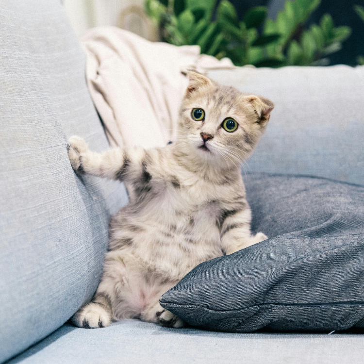

Welcoming a new cat into your home is an exciting yet challenging journey. This new life will add color to your daily routine, but understanding the differences between cat and human habits and needs is crucial before preparing their space.
For new cat owners, knowing the function and necessity of each cat product is the first step to creating the perfect cat life. Besides basic food and water bowls, many other items are essential for your cat’s health and happiness. These include litter boxes, cat litter, and cat beds, each playing an indispensable role in shaping your cat’s quality of life.
However, a cat’s needs go beyond just material items. They require an environment that makes them feel safe and comfortable. This means that, in addition to providing basic necessities, you should also consider their psychological needs, such as ample space to play, entertaining toys, and suitable resting areas. Understanding your cat’s nature and behavioral needs will help you better support them and create a loving and caring home.
In this article, we will detail essential cat items, including litter boxes, cat litter, food and water bowls, toys, scratching posts, and cat beds. Each item’s choice will directly impact your cat’s comfort and health. We will also cover additional important items like nail clippers, cat shampoo, litter scoops, and litter mats, which can further enhance your cat’s quality of life.
Finally, we will recommend seven trustworthy stores and provide a clear comparison table showing the essentials available at each store, helping you easily choose the best shopping options. Whether you are a new cat owner or an experienced one looking to improve your cat supplies, this article will provide practical advice to create a happy home for your cat.
Litter Box A litter box is where your cat will relieve itself daily, helping to keep your home clean and maintain your cat’s hygiene. Choosing a large and open litter box can make your cat feel more comfortable.
Cat Litter Cat litter absorbs urine and controls odor, keeping the litter box dry. Fine, clumping litter is generally preferred by cats.
Food and Water Bowls Food and water bowls are where your cat will eat and drink, so they must be kept clean. Ensure that the food and water bowls are placed separately to maintain hygiene and avoid contamination.
Cat Toys Toys help cats expend excess energy, prevent boredom, and promote healthy exercise. Providing a variety of toys will keep your cat active.
Scratching Post Scratching posts satisfy your cat’s natural scratching instinct and prevent them from damaging your furniture. Choosing materials and designs that your cat prefers will be more effective.
Cat Bed A cat bed provides a comfortable resting and sleeping place, allowing your cat to rest peacefully.
Nail Clippers Regularly trimming your cat’s nails helps prevent overgrowth, protects furniture, and maintains your cat’s health.
Cat Shampoo Cat shampoo helps keep your cat’s coat clean and shiny while controlling skin issues.
Litter Scoop A litter scoop is used to clean waste from the litter box, maintaining its cleanliness.
Litter Mat A litter mat helps reduce litter scattered on the floor, keeping your home tidy.
Your cat’s living environment is crucial to their health and happiness. Providing the above essential items can significantly enhance your cat’s quality of life, but also consider the following points:
Separate Placement Cats do not like to eat or drink near their bathroom. Make sure to keep the litter box separate from the food and water bowls.
Varied Setup Ensure that your cat has ample hiding spots, elevation changes, and sunbathing areas. These setups meet your cat’s natural needs and help them feel safe and comfortable.
Behavioral Needs Providing suitable toys and scratching posts can effectively reduce your cat’s anxiety and behavioral problems.
Want to gain a deeper understanding of cat behavior and how to care for them? Click the link below to read more related articles. read more related articles
Looking for products for your cat or dog? Check out the articles linked below for more information and recommendations. Explore more articles
Looking to transform your pet’s behavior or enhance your training skills? Discover our top recommended eBooks packed with expert tips and practical advice. Check out the links below for more details and to find the perfect guide for your pet training needs. Explore our eBooks